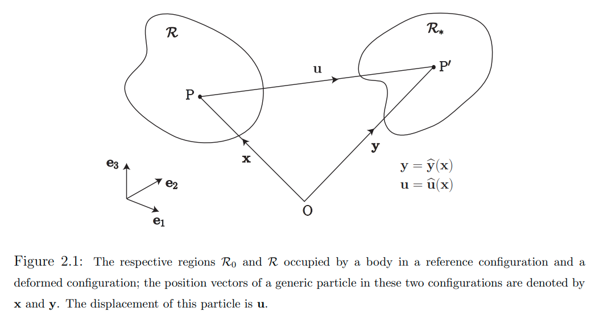
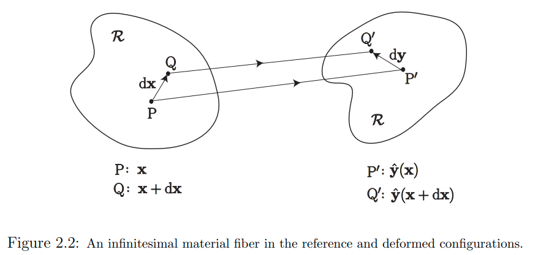
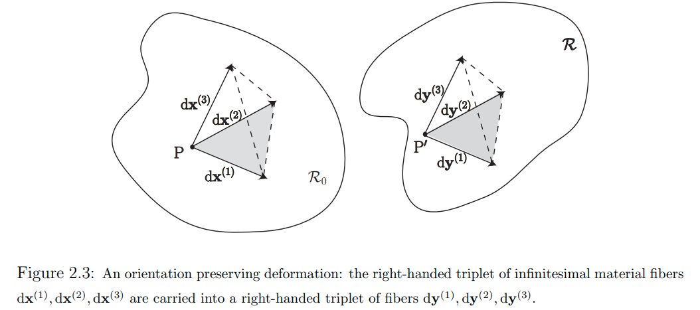
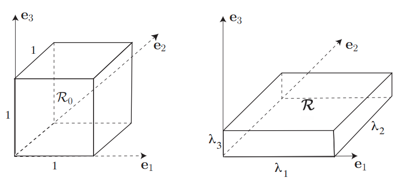
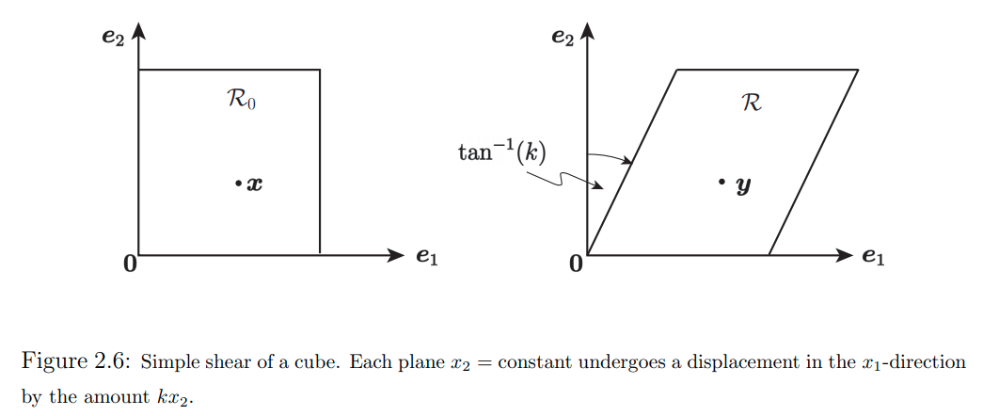
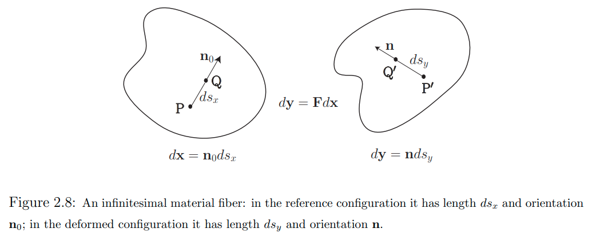
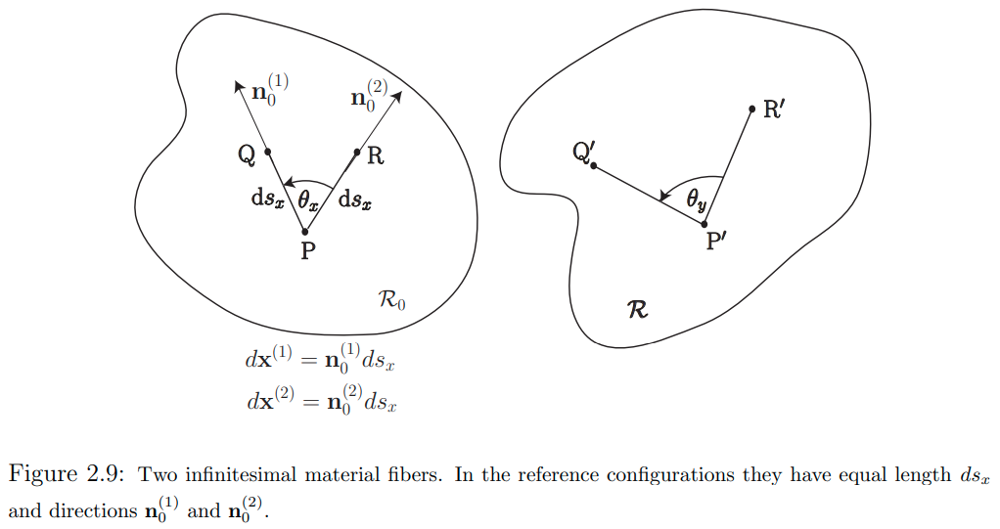
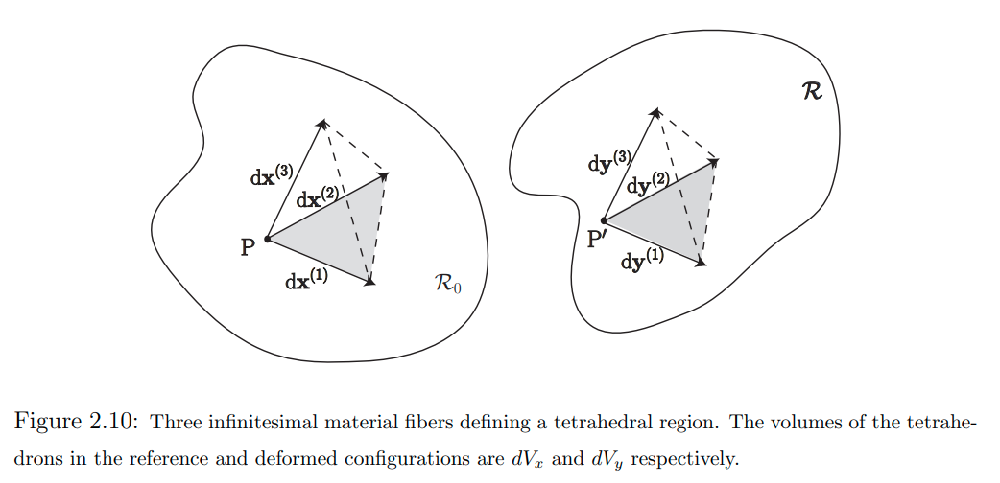
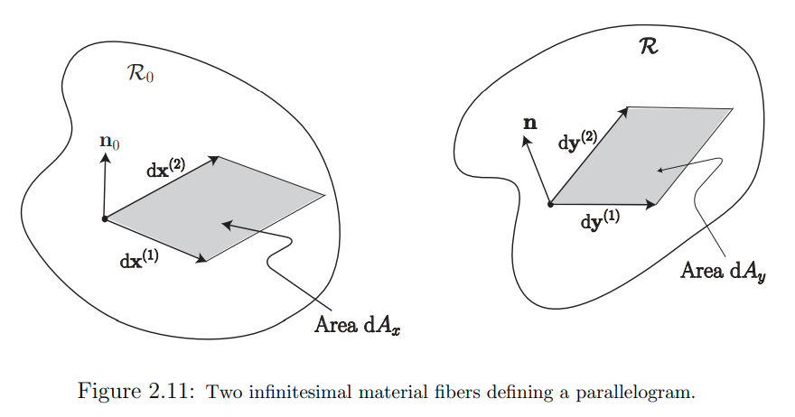

math for deformations
有关形变的几何&数学
- basics
- deformations
Deformation Gradient Tensor形变梯度张量: deformation in the neighborhood of a particle 在一个粒子邻域中的变形- 特殊形变：一些均匀变形：纯拉伸，简单剪切变形
- 一般形变：研究长度、朝向、夹角、体积、表面的改变
- 特殊形变：
rigid deformation刚性形变  一般形变：形变梯度张量 分解为 旋转矩阵 & stretch tensor
一般形变：形变梯度张量 分解为 旋转矩阵 & stretch tensor- strains 应变
- linearization 线性化近似 （无穷小形变张量）
- resource
- MIT Continuum Mechanics 连续介质力学 课程笔记，Chapter 2
- 重要参考资料：非常详尽、非常严谨、非常简洁明了，与线代知识紧密接续
- MIT Continuum Mechanics 连续介质力学 课程笔记，Chapter 2
- 虽然属于连续介质力学中的内容，但本篇同MIT笔记的第2章一样，本篇只讨论变形相关的几何本身，而不涉及变形的
cause成因，不涉及材料的组成材料等，只把物体假设为一般的continuum连续介质来讨论其变形的几何。
basics
- 两个向量的
dot product点积- \[\vec{a} \cdot \vec{b}\]
- 两个向量的
vector product向量积；叉乘- \[\vec{a} \times \vec{b}\]
- 两个向量的
tensor product张量积- \[\vec{a} \otimes \vec{b}=\vec{a} \vec{b}^{\top}\]
- e.g. \(\underset{3 \times 1}{\vec{a}} \otimes \underset{3 \times 1}{\vec{b}} = \underset{3 \times 1}{\vec{a}} \quad \underset{1 \times 3}{\vec{b}^{\top}} = \underset{3 \times 3}{C}\)
- 正交矩阵 -> 复数域推广 酉矩阵
- 实对称矩阵 -> 复数域推广 艾尔米特矩阵
- 矩阵的平方根
- 矩阵的极分解
- 矩阵的对数
- 实对称矩阵的对数矩阵的表达：
- \[\ln{\boldsymbol {\rm U}}=\overset{3}{\underset{i=1}{\sum}} \ln{\lambda_i} \left( \boldsymbol {\rm r}_i \otimes \boldsymbol {\rm r}_i \right)\]
- 实对称矩阵的对数矩阵的表达：
deformations
-
deformation：形变- 考虑一个物体（只需要是
continuum，连续介质），其中一个particle粒子 \(x\in \mathcal{R}_0\)，属于reference/undeformed configuration参考物体空间 \(\mathcal{R}_0\) - 考虑物体变形以后，粒子\(\boldsymbol {\rm x}\)的新位置：\(\boldsymbol {\rm y} \in \mathcal{R}\)，属于
deformed configuration变形后的物体空间 \(\mathcal{R}\) - 从 reference configuration 到 deformed configuration的
deformation形变定义为一个映射：- \[\boldsymbol {\rm y}=\hat{\boldsymbol {\rm y}}(\boldsymbol {\rm x})\]
- takes \(\mathcal{R}_0 \rightarrow \mathcal{R}\)
-
displacment vector field\(\hat{u}(x)\) 定义为- \[\hat{\boldsymbol {\rm u}}(\boldsymbol {\rm x})=\hat{\boldsymbol {\rm y}}(\boldsymbol {\rm x})-\boldsymbol {\rm x}\]
- 
- 考虑一个物体（只需要是
Deformation Gradient Tensor 形变梯度张量: deformation in the neighborhood of a particle 在一个粒子邻域中的变形
-
deformation gradient tensor形变梯度张量- 为了考虑物体在粒子x处的
state of stress应力状态等，需要考虑不仅在x处的变形，还要考虑粒子\(\boldsymbol {\rm x}\)的一个small neighborhood小邻域中的all particles所有粒子的变形 - 直觉上讲：我们期望在这个局部小邻域球中的粒子经历的变形由
rigid translation刚体平动、rigid rotation刚体旋转 和"straining"“应变”组成；在后面将会准确公式化表述 - 在一个generic粒子x处的
deformation gradient tensor形变梯度张量定义为：- \[\boldsymbol{\rm F}(\boldsymbol {\rm x})={\rm Grad} \; \boldsymbol {\rm y}(\boldsymbol {\rm x})\]
- 这是用于描述、研究在邻域中的变形的主要量
- \(\boldsymbol{\rm F}(\boldsymbol {\rm x})\)是一个2-tensor，它的元素为：
- \[F_{ij}(\boldsymbol {\rm x})=\frac{\partial y_i(\boldsymbol {\rm x})}{\partial x_j}\]
- 是一个3x3矩阵场 \([F(\boldsymbol {\rm x})]\)
- 为了考虑物体在粒子x处的
- 一个
infinitesimal material fiber无穷小 物质 纤维的deformation- 考虑两个在reference configuration中放置于\(\boldsymbol {\rm x}\)和\(\boldsymbol {\rm x} + {\rm d}\boldsymbol {\rm x}\)处的两个粒子p, q；
- 考虑包含这两个粒子的
infinitesimal material fiber无穷小 物质 纤维：\({\rm d}\boldsymbol {\rm x}\) - 在deformed configuration中，这两个粒子位于\(\boldsymbol {\rm y}(\boldsymbol {\rm x})\)和\(\boldsymbol {\rm y}(\boldsymbol {\rm x} + {\rm d}\boldsymbol {\rm x})\)处
- 则这个infinitesimal material fiber的deformed
image像（代数中的概念）用如下 向量 描述- \[{\rm d}\boldsymbol {\rm y}=\boldsymbol {\rm y}(\boldsymbol {\rm x} + {\rm d}\boldsymbol {\rm x})-\boldsymbol {\rm y}(\boldsymbol {\rm x})\]
- 由于这两个粒子p,q是相邻的，距离\(\lVert {\rm d}\boldsymbol {\rm x} \rVert\)很近，因此可以用
Taylor expansion泰勒展开来近似该表达式- \[{\rm d}\boldsymbol {\rm y}=\left( {\rm Grad} \; \boldsymbol {\rm y} \right ) {\rm d}\boldsymbol {\rm x} + {\rm O}(\lVert {\rm d}\boldsymbol {\rm x} \rVert^2) = \boldsymbol {\rm F} \; {\rm d}\boldsymbol {\rm x} + {\rm O}(\lVert {\rm d}\boldsymbol {\rm x} \rVert^2)\]
- 即近似为：
- \[{\rm d}\boldsymbol {\rm y}=\boldsymbol {\rm F}{\rm d}\boldsymbol {\rm x}\]
- 其组分为：
- \({\rm d}y_i=\underset{j}{\sum} F_{ij} {\rm d}x_j\) or \(\{y\}=[F]\{x\}\)
- 注意，这个近似并不需要假设梯度场的变化小；它只需要假设p和q挨得足够近
- 即：\(\boldsymbol {\rm F}\) 把 无穷小未变形物质纤维\({\rm d}\boldsymbol {\rm x}\)
carries into带到了它在变形configuration中的位置\({\rm d}\boldsymbol {\rm y}\)处
- 
- \(\boldsymbol {\rm F}\)应具有的一些假设
- 行列式不为0
- 考虑一个物理上可实现的变形：单个物质纤维不会裂变为两个物质纤维；两个不同的物质纤维不会合并为同一个物质纤维
- 即，\({\rm d}\boldsymbol {\rm y}=\boldsymbol {\rm F}{\rm d}\boldsymbol {\rm x}\)需要是一个
one-to-one一一映射，即\(\boldsymbol {\rm F}\)需要是non-sigular非奇异矩阵：- \[J=\det \boldsymbol {\rm F} \neq 0\]
- \(J\)也叫做
Jacobian determinant雅克比行列式
- 行列式为正值
- 考虑三个独立物质纤维\({\rm d}\boldsymbol {\rm x}^{(i)}, i=1,2,3\)
- 变形场 把这些纤维带到了3组位置：\({\rm d}\boldsymbol {\rm y}^{(i)}=\boldsymbol {\rm F} {\rm d}\boldsymbol {\rm x}^{(i)}, i=1,2,3\)
- 如果这个变形把右手组合纤维\(\{ {\rm d}\boldsymbol {\rm x}^{(1)}, {\rm d}\boldsymbol {\rm x}^{(2)}, {\rm d}\boldsymbol {\rm x}^{(3)} \}\)带到了右手组合纤维\(\{ {\rm d}\boldsymbol {\rm y}^{(1)}, {\rm d}\boldsymbol {\rm y}^{(2)}, {\rm d}\boldsymbol {\rm y}^{(3)} \}\)，则称这个变形被称作是
preveserves orientation定向保留的- 这里的
orientation是群论/向量空间中的概念：定向；其实反映的是一种类似手性的概念，orientation preserving即意味着手性得到保留； - 镜射变换，手性就不保留；
- 这里的
- 一个变形是
orientation preserving的，当且仅当行列式大于0：- \[J=\det \boldsymbol {\rm F} \gt 0\]
- 
- 行列式不为0
-
变形的正式表述
- 如上，一个粒子\(\boldsymbol {\rm x}\)一般的邻域粒子\(\boldsymbol {\rm x} + {\rm d}\boldsymbol {\rm x}\)的变形正式表述为：
- \[\boldsymbol {\rm y}(\boldsymbol {\rm x} + {\rm d}\boldsymbol {\rm x})=\boldsymbol {\rm y}(\boldsymbol {\rm x})+\boldsymbol {\rm F}{\rm d}\boldsymbol {\rm x}\]
- 因此，想要描述粒子\(\boldsymbol {\rm x}\)的整个邻域的变形特征，就必须知道变形函数\(\boldsymbol {\rm y}(\boldsymbol {\rm x})\)和变形梯度张量\(\boldsymbol{\rm F}(\boldsymbol {\rm x})\)
- 变形函数\(\boldsymbol {\rm y}(\boldsymbol {\rm x})\)刻画的是邻域粒子的平动
- 变形梯度张量\(\boldsymbol{\rm F}(\boldsymbol {\rm x})\)刻画的是旋转和”应变”
- 如上，一个粒子\(\boldsymbol {\rm x}\)一般的邻域粒子\(\boldsymbol {\rm x} + {\rm d}\boldsymbol {\rm x}\)的变形正式表述为：
特殊形变：一些均匀变形：纯拉伸，简单剪切变形
-
homogeneous deformation均匀变形- 如果一个变形的变形梯度张量在整个ref区域\(\mathcal{R}_0\)都是常量，那么这个变形\(\boldsymbol {\rm y}(\boldsymbol {\rm x})\)就是一个
homogeneous deformation - 因为变形梯度张量是一个常量，因此这种变形可以有如下表述：
- \[\boldsymbol {\rm y}(\boldsymbol {\rm x})=\boldsymbol {\rm F} \boldsymbol {\rm x} + \boldsymbol {\rm b}\]
- 其中，\(\boldsymbol {\rm F}\)是一个常张量，\(\boldsymbol {\rm b}\)是一个常向量
- 这其实就是一个一般的仿射变换：平动，旋转，缩放，剪切
- 如果一个变形的变形梯度张量在整个ref区域\(\mathcal{R}_0\)都是常量，那么这个变形\(\boldsymbol {\rm y}(\boldsymbol {\rm x})\)就是一个
- 假设\(\{\boldsymbol {\rm e}_1, \boldsymbol {\rm e}_2, \boldsymbol {\rm e}_3\}\) 是ref的
orthonormal basis标准正规基底；假设基底和一个单位cube的边对齐，从这个单位方出发进行变形
pure stretch 纯拉伸

- \[\boldsymbol {\rm y}=\boldsymbol {\rm F} \boldsymbol {\rm x} \qquad where \qquad \boldsymbol {\rm F}=\lambda_1 \boldsymbol {\rm e}_1 \otimes \boldsymbol {\rm e}_1 + \lambda_2 \boldsymbol {\rm e}_2 \otimes \boldsymbol {\rm e}_2 + \lambda_3 \boldsymbol {\rm e}_3 \otimes \boldsymbol {\rm e}_3\]
- 在标准正规基底\(\{\boldsymbol {\rm e}_1, \boldsymbol {\rm e}_2, \boldsymbol {\rm e}_3\}\)下
- \[\boldsymbol {\rm e}_1 \otimes \boldsymbol {\rm e}_1=\begin{pmatrix} 1 \\ 0 \\ 0 \end{pmatrix} \begin{pmatrix} 1 & 0 & 0 \end{pmatrix} = \begin{pmatrix} 1 & 0 & 0 \\ 0 & 0 & 0 \\ 0 & 0 & 0 \end{pmatrix}\]
- \[\boldsymbol {\rm F}=\begin{pmatrix} \lambda_1 & 0 & 0 \\ 0 & \lambda_2 & 0 \\ 0 & 0 & \lambda_3 \end{pmatrix}\]
- \(\lambda_1, \lambda_2, \lambda_3\)代表在3个基底方向上的拉压比率
-
如果\(\lambda_1 \lambda_2 \lambda_3 = 1\)，则是
isochoric等容的变形 -
pure dilatation纯膨胀- \[\lambda_1 = \lambda_2 = \lambda_3\]
-
uniaxial stretch单轴拉伸- \[\lambda_2 = \lambda_3 =1\]
- \[\boldsymbol {\rm F}=\lambda_1 \boldsymbol {\rm e}_1 \otimes \boldsymbol {\rm e}_1 + \boldsymbol {\rm e}_2 \otimes \boldsymbol {\rm e}_2 + \boldsymbol {\rm e}_3 \otimes \boldsymbol {\rm e}_3 = \boldsymbol{\rm I} + (\lambda_1-1) \boldsymbol {\rm e}_1 \otimes \boldsymbol {\rm e}_1\]
- 在标准正规基底\(\{\boldsymbol {\rm e}_1, \boldsymbol {\rm e}_2, \boldsymbol {\rm e}_3\}\)下
- \[\boldsymbol {\rm F}=\begin{pmatrix} \lambda_1 & 0 & 0 \\ 0 & 1 & 0 \\ 0 & 0 & 1 \end{pmatrix}\]
- 更一般地：
- \[\boldsymbol {\rm F}= \boldsymbol{\rm I} + (\lambda_1-1) \boldsymbol {\rm n} \otimes \boldsymbol {\rm n}, \qquad \lVert \boldsymbol {\rm n} \rVert=1\]
simple shearing deformation 简单剪切变形

- \[\boldsymbol {\rm y}=\boldsymbol {\rm F} \boldsymbol {\rm x} \qquad where \qquad \boldsymbol {\rm F}=\boldsymbol {\rm I} + k \; \boldsymbol{\rm e}_1 \otimes \boldsymbol {\rm e}_2\]
- 在标准正规基底\(\{\boldsymbol {\rm e}_1, \boldsymbol {\rm e}_2, \boldsymbol {\rm e}_3\}\)下
- \[\boldsymbol{\rm e}_1 \otimes \boldsymbol {\rm e}_2=\begin{pmatrix} 1 \\ 0 \\ 0 \end{pmatrix} \begin{pmatrix} 0 & 1 & 0 \end{pmatrix} = \begin{pmatrix} 0 & 1 & 0 \\ 0 & 0 & 0 \\ 0 & 0 & 0 \end{pmatrix}\]
- \[\boldsymbol {\rm F}=\begin{pmatrix} 1 & k & 0 \\ 0 & 1 & 0 \\ 0 & 0 & 1 \end{pmatrix}\]
-
\[\boldsymbol {\rm u}(\boldsymbol {\rm x})=\boldsymbol {\rm y}(\boldsymbol {\rm x})-\boldsymbol {\rm x}=\boldsymbol {\rm F}\boldsymbol {\rm x}-\boldsymbol {\rm x}=k \; \boldsymbol{\rm e}_1 \otimes \boldsymbol {\rm e}_2 \; \boldsymbol {\rm x}=kx_2\boldsymbol {\rm e}_1\]
- 意味着\(x_2={\rm constant}\)平面朝着\(x_1\)-方向 刚体平动，平动量为\(kx_2\)
- 把矩阵\(\boldsymbol {\rm F}\)中出现\(k\)的那个剪切量，行标的方向称为
shearing direction剪切方向，列标的方向对应法向量的平面称为shearing/glide plane剪切平面
- 更一般地：
- \[\boldsymbol {\rm F}=\boldsymbol {\rm I} + k \; \boldsymbol{\rm m} \otimes \boldsymbol {\rm n}, \qquad \lVert \boldsymbol {\rm m} \rVert=\lVert \boldsymbol {\rm n} \rVert = 1, \qquad \boldsymbol {\rm m} \cdot \boldsymbol {\rm n} = 0\]
- \(\boldsymbol {\rm m}\)为剪切方向，\(\boldsymbol {\rm n}\)法向量对应的平面为剪切平面
一般形变：研究长度、朝向、夹角、体积、表面的改变
一个物质纤维微元的改变：长度、朝向

- 长度改变比例：\(\lVert \boldsymbol {\rm F} \boldsymbol {\rm n}_0 \rVert\)
- 新朝向：\(\frac {\boldsymbol {\rm F} \boldsymbol {\rm n}_0}{\lVert \boldsymbol {\rm F} \boldsymbol {\rm n}_0 \rVert}\)
两个物质纤维微元的改变：夹角

- 考虑由\(\boldsymbol {\rm n}_0^{(1)}\)，\(\boldsymbol {\rm n}_0^{(2)}\)定义的夹角
- 新夹角大小：\(\cos{\theta_y}= \frac {\boldsymbol {\rm F}\boldsymbol {\rm n}_0^{(1)} \cdot \boldsymbol {\rm F}\boldsymbol {\rm n}_0^{(2)}} { \lVert \boldsymbol {\rm F}\boldsymbol {\rm n}_0^{(1)} \rVert \lVert \boldsymbol {\rm F}\boldsymbol {\rm n}_0^{(2)} \rVert}\)
一块体积物质微元的改变：体积

- 考虑由\({\rm d}\boldsymbol {\rm x}^{(1)}, {\rm d}\boldsymbol {\rm x}^{(2)}, {\rm d}\boldsymbol {\rm x}^{(3)}\) 定义的
tetrahedron四面体 - 体积改变：\({\rm d}V_y=J {\rm d}V_x \qquad where \qquad J=\det\boldsymbol {\rm F}\)
 一块表面物质微元的改变：面积，平面法向量
一块表面物质微元的改变：面积，平面法向量

- 考虑由\({\rm d}\boldsymbol {\rm x}^{(1)}, {\rm d}\boldsymbol {\rm x}^{(2)}\) 定义的
parallelogram平行四边形 - 新法向量：\(\boldsymbol {\rm n}=\frac {\boldsymbol {\rm F}^{-\top} \boldsymbol {\rm n}_0 } {\lVert \boldsymbol {\rm F}^{-\top} \boldsymbol {\rm n}_0 \rVert}\)
- 面积变化比例：\({\rm d}A_y={\rm d}A_x \, J \lVert \boldsymbol {\rm F}^{-\top} \boldsymbol {\rm n}_0 \rVert\)
- 注意：平面法向量一般不继承变形操作
- 变形后的平面的法向量\(\boldsymbol {\rm n}\)，一般不与 变形前平面法向量\(\boldsymbol {\rm n}_0\)变形后的向量\(\boldsymbol {\rm F} \boldsymbol {\rm n}_0\) 平行
- 变形前与平面垂直的法向量\(\boldsymbol {\rm n}_0\)，在变形后的向量\(\boldsymbol {\rm F} \boldsymbol {\rm n}_0\) 一般不与 变形后的平面垂直
-
Q: 有待数学证明
- 若要使平面法向量 处处 继承变形操作，需要对任意\(\boldsymbol {\rm n}_0\)满足\(\boldsymbol {\rm F}^{-\top} \boldsymbol {\rm n}_0\)与\(\boldsymbol {\rm F} \boldsymbol {\rm n}_0\)方向一致；
- \(\boldsymbol {\rm F}^{\top}\boldsymbol {\rm F} \boldsymbol {\rm n}_0=\alpha \boldsymbol {\rm n}_0\) 对于任意\(\boldsymbol {\rm n}_0\)均成立
- 意味着\(\boldsymbol {\rm F}^{\top}\boldsymbol {\rm F}\)是正交矩阵？变形是homogeneous的，而且只包含旋转+等比缩放？
特殊形变：rigid deformation刚性形变
- 刚性形变的定义
- 物体中的所有对粒子在变形后保持变形前距离
- i.e. 任意两个粒子\(\boldsymbol {\rm z}\)，\(\boldsymbol {\rm x}\)在变形前在ref configuration中距离为\(\lVert \boldsymbol {\rm z}-\boldsymbol {\rm x} \rVert\)，应与变形后在deformed configuration中距离\(\lVert \boldsymbol {\rm y}(\boldsymbol {\rm z})-\boldsymbol {\rm y}(\boldsymbol {\rm x}) \rVert\)相等
- \[\lVert \boldsymbol {\rm y}(\boldsymbol {\rm z})-\boldsymbol {\rm y}(\boldsymbol {\rm x}) \rVert^2 = \underset{i}{\sum} \left[ y_i(\boldsymbol {\rm z}) - y_i(\boldsymbol {\rm x}) \right] \left[ y_i(\boldsymbol {\rm z}) - y_i(\boldsymbol {\rm x}) \right] = \underset{i}{\sum} (z_i-x_i)(z_i-x_i) \qquad {\rm for \; all \;} \boldsymbol {\rm x},\boldsymbol {\rm z} \in \mathcal{R}_0\]
- 上式等价于 \(\boldsymbol {\rm F}^{\top}(\boldsymbol {\rm x}) \boldsymbol {\rm F}(\boldsymbol {\rm z})=\boldsymbol {\rm I} \qquad {\rm for \; all \;} \boldsymbol {\rm x},\boldsymbol {\rm z} \in \mathcal{R}_0\)
- 上式等价于\(\boldsymbol {\rm F}(\boldsymbol {\rm x})\)是一个 常量张量 ，且是一个 旋转矩阵（
proper orthogonal tensor行列式为1的正交矩阵）
证明：点击展开
- 首先两边对\(x_j\)求偏导
- \[\underset{i}{\sum} -2 F_{ij}(\boldsymbol {\rm x})(y_i(\boldsymbol {\rm z}) - y_i(\boldsymbol {\rm x}))=-2(z_j-x_j)\]
- 再两边对\(z_k\)求偏导：
- \[-2 F_{ij}(\boldsymbol {\rm x})F_{ik}(\boldsymbol {\rm z})= -2\delta_{jk} =\begin{cases} -2 & \text{if $j = k$ } \\ 0 & \text{if $j \neq k$ } \end{cases}\]
- i.e. \(F_{ij}(\boldsymbol {\rm x})F_{ik}(\boldsymbol {\rm z})= \delta_{jk}\)
- 即得： \(\boldsymbol {\rm F}^{\top}(\boldsymbol {\rm x}) \boldsymbol {\rm F}(\boldsymbol {\rm z})=\boldsymbol {\rm I} \qquad {\rm for \; all \;} \boldsymbol {\rm x},\boldsymbol {\rm z} \in \mathcal{R}_0\)
- 可得出\(\boldsymbol {\rm F}(\boldsymbol {\rm x})\)处处行列式为1
- 代入\(\boldsymbol {\rm z}=\boldsymbol {\rm x}\)可得\(\boldsymbol {\rm F}^{\top}(\boldsymbol {\rm x}) \boldsymbol {\rm F}(\boldsymbol {\rm x})=\boldsymbol {\rm I}\qquad {\rm for \; all \;} \boldsymbol {\rm x}\in \mathcal{R}_0\)，即\(\boldsymbol {\rm F}(\boldsymbol {\rm x})\)处处正交
- 两边同乘\(\boldsymbol {\rm F}(\boldsymbol {\rm x})\)，可得\(\boldsymbol {\rm F}(\boldsymbol {\rm z})=\boldsymbol {\rm F}(\boldsymbol {\rm x})\qquad {\rm for \; all \;} \boldsymbol {\rm x},\boldsymbol {\rm z} \in \mathcal{R}_0\)，即\(\boldsymbol {\rm F}(\boldsymbol {\rm x})\)是一个常量张量
- 结论：刚性形变对应的形变梯度张量是一个常旋转矩阵
- 记对所有\(\boldsymbol {\rm x} \in \mathcal{R}_0\) ，\(\boldsymbol {\rm F}(\boldsymbol {\rm x})=\boldsymbol {\rm Q}\)，\(\boldsymbol {\rm Q}\)是一个 旋转矩阵（
proper orthogonal tensor行列式为1的正交矩阵） - 则刚性形变的形式为：
- \[\boldsymbol {\rm y}(\boldsymbol {\rm x})=\boldsymbol {\rm Q} \boldsymbol {\rm x} + \boldsymbol {\rm b}\]
- 记对所有\(\boldsymbol {\rm x} \in \mathcal{R}_0\) ，\(\boldsymbol {\rm F}(\boldsymbol {\rm x})=\boldsymbol {\rm Q}\)，\(\boldsymbol {\rm Q}\)是一个 旋转矩阵（
一般形变：形变梯度张量 分解为 旋转矩阵 & stretch tensor
- 先前结论：
- 形变梯度张量\(\boldsymbol {\rm F}(\boldsymbol {\rm x})\)完备地描述了在粒子\(\boldsymbol {\rm x}\)一个邻域中的变形的特征；
- 变形的一部分是刚体旋转，另一部分是一种”distortion”/”strain”
- 对形变梯度张量进行
polar decomposition极分解- 定理：任何带有正值行列式的非奇异矩阵\(\boldsymbol {\rm F}\)可以被uniquely写作一个
proper orthogonal tensor旋转矩阵\(\boldsymbol {\rm R}\)和一个symmetric positive definite tensor实对称正定矩阵\(\boldsymbol {\rm U}\)的矩阵相乘乘积 - \[\boldsymbol {\rm F}=\boldsymbol {\rm R}\boldsymbol {\rm U}\]
- \(\boldsymbol {\rm R}\)代表着\(\boldsymbol {\rm F}\)的刚体旋转的部分，\(\boldsymbol {\rm U}\)代表着\(\boldsymbol {\rm F}\)的非旋转的部分
- \(\boldsymbol {\rm U}\)如此给出：\(\boldsymbol {\rm U}=\sqrt{ \boldsymbol {\rm F}^{\top}\boldsymbol {\rm F} }\)
- \(\boldsymbol {\rm R}\)如此给出：\(\boldsymbol {\rm R}=\boldsymbol {\rm F}\boldsymbol {\rm U}^{-1}\)
- 考虑一个
fiber纤维的形变表达式为\({\rm d}\boldsymbol {\rm x} \rightarrow {\rm d}\boldsymbol {\rm y}=\boldsymbol {\rm F}{\rm d}\boldsymbol {\rm x}\)，也可以写作- \[{\rm d}\boldsymbol {\rm y}=\boldsymbol {\rm R}(\boldsymbol {\rm U}{\rm d}\boldsymbol {\rm x})\]
- 即这个纤维可以被看做 首先经过变形\(\boldsymbol {\rm U}{\rm d}\boldsymbol {\rm x}\)，再经过刚体旋转\(\boldsymbol {\rm R}\)
- \[{\rm d}\boldsymbol {\rm x} \rightarrow \boldsymbol {\rm U}{\rm d}\boldsymbol {\rm x} \rightarrow \boldsymbol {\rm R}(\boldsymbol {\rm U}{\rm d}\boldsymbol {\rm x})={\rm d}\boldsymbol {\rm y}\]
- 定理：任何带有正值行列式的非奇异矩阵\(\boldsymbol {\rm F}\)可以被uniquely写作一个
-
right stretch tensor右拉伸张量 \(\boldsymbol {\rm U}\) 的性质-
symmetric对称- 有3个实数特征值\(\lambda_1, \lambda_2, \lambda_3\)；
- 有和3个特征值相对应的三元组
orthonormal正规特征向量\(\boldsymbol {\rm r}_1, \boldsymbol {\rm r}_2, \boldsymbol {\rm r}_3\)
-
positive definite正定- 3个特征值均为正数
- 在基底/主方向\(\{ \boldsymbol {\rm r}_1, \boldsymbol {\rm r}_2, \boldsymbol {\rm r}_3 \}\) 下的表示
- \[[\boldsymbol {\rm U}]=\begin{pmatrix} \lambda_1 & 0 & 0 \\ 0 & \lambda_2 & 0 \\ 0 & 0 & \lambda_3 \end{pmatrix}, \qquad \lambda_i \gt 0\]
- 因此对于 \({\rm d}\boldsymbol {\rm x} \rightarrow \boldsymbol {\rm U}{\rm d}\boldsymbol {\rm x}\)，意味着纤维\({\rm d}\boldsymbol {\rm x}\) 被tensor \(\boldsymbol {\rm U}\) 在 \(\boldsymbol {\rm U}\) 的
principle directions被拉伸，拉伸的量取决于每个方向的corresponding eigenvalues相应的特征值 - 注意：只有在\(\boldsymbol {\rm U}\)的主方向表示\(\boldsymbol {\rm U}\)才是纯拉伸；在一般情况下表示\(\boldsymbol {\rm U}\)，既包含拉伸又包含剪切；不过拉伸的量仍然是由特征值定义；具体见 strains 应变 章节
- 因为\({\rm d}\boldsymbol {\rm x}\)方向一般不与 \({\rm U}{\rm d}\boldsymbol {\rm x}\) 平行，因此纤维在进行\({\rm d}\boldsymbol {\rm x} \rightarrow \boldsymbol {\rm U}{\rm d}\boldsymbol {\rm x}\)也带有旋转；但这种旋转不是一种刚体旋转，因为纤维的长度也发生了变化
-
-
left stretch tensor左拉伸张量\(\boldsymbol {\rm V}\)- 极分解有一种alternative version：
- \[\boldsymbol {\rm F}=\boldsymbol {\rm V}\boldsymbol {\rm R}\]
- \(\boldsymbol {\rm V}\)如此给出：\(\boldsymbol {\rm V}=\sqrt{ \boldsymbol {\rm F}\boldsymbol {\rm F}^{\top} }\)
- \(\boldsymbol {\rm R}\)如此给出：\(\boldsymbol {\rm R}=\boldsymbol {\rm V}^{-1}\boldsymbol {\rm F}\)
- \(\boldsymbol {\rm R}\)与\(\boldsymbol {\rm F}=\boldsymbol {\rm R}\boldsymbol {\rm U}\)中的\(\boldsymbol {\rm R}\)
identical完全一样- \(\boldsymbol {\rm R}=\boldsymbol {\rm V}^{-1}\boldsymbol {\rm F}=\boldsymbol {\rm F}\boldsymbol {\rm U}^{-1}\)，故有\(\boldsymbol {\rm V}=\boldsymbol {\rm F}\boldsymbol {\rm U}\boldsymbol {\rm F}^{-1}\)
- 一个一般未变形纤维\({\rm d}\boldsymbol {\rm x}\)的形变也可以看做
- \[{\rm d}\boldsymbol {\rm y}=\boldsymbol {\rm V}(\boldsymbol {\rm R}{\rm d}\boldsymbol {\rm x})\]
- 首先经过刚体旋转\(\boldsymbol {\rm R}\)，再经过\(\boldsymbol {\rm V}\)的stretching
- \(\boldsymbol {\rm V}\)与\(\boldsymbol {\rm U}\)性质相似：
- 有3个正实数特征值\(\lambda_1, \lambda_2, \lambda_3\)及对应的特征向量 \(\boldsymbol {l}_1, \boldsymbol {l}_2, \boldsymbol {l}_3\)，组成主基底\(\{\boldsymbol {l}_1, \boldsymbol {l}_2, \boldsymbol {l}_3 \}\)
- 极分解有一种alternative version：
- \(\boldsymbol {\rm U}\)、\(\boldsymbol {\rm V}\)、\(\boldsymbol {\rm F}\)、\(\boldsymbol {\rm R}\)的联系
- \(\boldsymbol {\rm U}\)和\(\boldsymbol {\rm V}\)的三个特征值\(\lambda_1, \lambda_2, \lambda_3\)一模一样；又被称作
principle stretches主拉伸，意味着在\(\boldsymbol {\rm x}\)处的变形 - \(\boldsymbol {\rm U}\)的特征向量与\(\boldsymbol {\rm V}\)的特征向量的联系：\(\boldsymbol {l}_i=\boldsymbol {\rm R}\boldsymbol {\rm r}_i, i=1,2,3\)
- \(\boldsymbol {\rm U}\)和\(\boldsymbol {\rm V}\)用其特征向量表示：
- \[\boldsymbol {\rm U}=\overset{3}{\underset{i=1}{\sum}} \lambda_i \boldsymbol {\rm r}_i \otimes \boldsymbol {\rm r}_i \qquad \boldsymbol {\rm V}=\overset{3}{\underset{i=1}{\sum}} \lambda_i \boldsymbol {l}_i \otimes \boldsymbol {l}_i\]
- \(\boldsymbol {\rm F}\)、\(\boldsymbol {\rm R}\)也可以用\(\boldsymbol {\rm U}\)和\(\boldsymbol {\rm V}\)的特征向量表示
- \[\boldsymbol {\rm F}=\overset{3}{\underset{i=1}{\sum}} \lambda_i \boldsymbol {l}_i \otimes \boldsymbol {\rm r}_i \qquad \boldsymbol {\rm R}=\overset{3}{\underset{i=1}{\sum}} \lambda_i \boldsymbol {l}_i \otimes \boldsymbol {\rm r}_i\]
- \(\boldsymbol {\rm U}\)和\(\boldsymbol {\rm V}\)的三个特征值\(\lambda_1, \lambda_2, \lambda_3\)一模一样；又被称作
- \(\boldsymbol {\rm F}=\boldsymbol {\rm R}\boldsymbol {\rm U}\) 代入 章节 一般形变：研究长度、朝向、夹角、体积、表面的改变 中的每一项，我们可以得到：
- 只依赖于stretch tensor \(\boldsymbol {\rm U}\)：
- 纤维长度改变 \({\rm d}s_y={\rm d}s_x \sqrt{ \boldsymbol {\rm U}^2\boldsymbol {\rm n}_0 \cdot \boldsymbol {\rm n}_0 }\)
- 夹角改变 \(\cos{\theta_y}=\frac {\boldsymbol {\rm U}^2\boldsymbol {\rm n}_0^{(1)} \cdot \boldsymbol{\rm n}_0^{(2)}} {\sqrt{\boldsymbol {\rm U}^2\boldsymbol {\rm n}_0^{(1)} \cdot \boldsymbol{\rm n}_0^{(1)}} \sqrt{\boldsymbol {\rm U}^2\boldsymbol {\rm n}_0^{(2)} \cdot \boldsymbol{\rm n}_0^{(2)}}}\)
- 体积改变 \({\rm d}V_y={\rm d}V_x \det{\boldsymbol {\rm U}}\)
- 表面面积改变 \({\rm d}A_y={\rm d}A_x (\det{\boldsymbol {\rm U}}) \lVert \boldsymbol {\rm U}^{-1} \boldsymbol {\rm n}_0 \rVert\)
- 同时依赖于stretch tensor \(\boldsymbol {\rm U}\) 和旋转矩阵\(\boldsymbol {\rm R}\)
- 纤维朝向改变：\(\boldsymbol {\rm n}=\boldsymbol {\rm R} \frac {\boldsymbol {\rm U}\boldsymbol {\rm n}_0} {\lVert \boldsymbol {\rm U}\boldsymbol {\rm n}_0 \rVert}\)
- 表面法向量改变：\(\boldsymbol {\rm n}=\boldsymbol {\rm R} \frac {\boldsymbol {\rm U}^{-1}\boldsymbol {\rm n}_0} {\lVert \boldsymbol {\rm U}^{-1}\boldsymbol {\rm n}_0 \rVert}\)
- 只依赖于stretch tensor \(\boldsymbol {\rm U}\)：
- 逆变形：
left stretch tensor左拉伸张量 \(\boldsymbol {\rm V}\) 可以帮助我们计算从deformed configuration到ref configuration的变形- 从 \({\rm d}\boldsymbol {\rm y}=\boldsymbol {\rm V}(\boldsymbol {\rm R}{\rm d}\boldsymbol {\rm x})\) 推出 \({\rm d}\boldsymbol {\rm x}=\boldsymbol {\rm R}^{-1}(\boldsymbol {\rm V}^{-1}{\rm d}\boldsymbol {\rm y})\)
- 把\(\boldsymbol {\rm R}^{-1}\)看做”\(\boldsymbol {\rm R}\)“，把\(\boldsymbol {\rm V}^{-1}\)看做”\(\boldsymbol {\rm U}\)“，之前的结论都可以顺带推出
- 可以这样思考：
-
right stretch tensor\(\boldsymbol {\rm U}\) 是从reference 到 deformed ，可以看做为Lagrangian stretch tensor拉格朗日拉伸张量 -
left stretch tensor\(\boldsymbol {\rm V}\) 是从deformed 到 reference ，可以看做为Eulerian stretch tensor欧拉拉伸张量
-
-
Cauchy-Green deformation tensor柯西-格林变形张量- 由于\(\boldsymbol {\rm U}=\sqrt{ \boldsymbol {\rm F}^{\top}\boldsymbol {\rm F} }\)和\(\boldsymbol {\rm V}=\sqrt{ \boldsymbol {\rm F}\boldsymbol {\rm F}^{\top} }\)的计算非常
tedious繁琐；
由于\(\boldsymbol {\rm U}\)和\(\boldsymbol {\rm U}^2\)之间是一一映射；
可以利用\(\boldsymbol {\rm U}^2\)和\(\boldsymbol {\rm V}^2\)作为stretch 的一种measure评估 -
\[\boldsymbol {\rm C}=\boldsymbol {\rm F}^{\top}\boldsymbol {\rm F}=\boldsymbol {\rm U}^2 \qquad \boldsymbol {\rm B}=\boldsymbol {\rm F}\boldsymbol {\rm F}^{\top}=\boldsymbol {\rm V}^2\]
- 分别为右柯西格林形变张量、左柯西科林形变张量
- \[\boldsymbol {\rm C}=\overset{3}{\underset{i=1}{\sum}} \lambda_i^2 \left( \boldsymbol {\rm r}_i \otimes \boldsymbol {\rm r}_i \right) \qquad \boldsymbol {\rm B}=\overset{3}{\underset{i=1}{\sum}} \lambda_i^2 \left( \boldsymbol {l}_i \otimes \boldsymbol {l}_i \right)\]
- 由于\(\boldsymbol {\rm U}=\sqrt{ \boldsymbol {\rm F}^{\top}\boldsymbol {\rm F} }\)和\(\boldsymbol {\rm V}=\sqrt{ \boldsymbol {\rm F}\boldsymbol {\rm F}^{\top} }\)的计算非常
strains 应变
-
strains应变与deformation形变的联系- \(\boldsymbol {\rm U}\)和\(\boldsymbol {\rm V}\)刻画了变形中的non-rigid part 非刚体变形的部分；
- 考虑：如果
deformed configurationcoincide withreference configuration（即二者相同）- 那么变形表达为\(\boldsymbol {\rm y}(\boldsymbol {\rm x}) \equiv \boldsymbol {\rm x}\)
- 那么\(\boldsymbol {\rm F}=\boldsymbol {\rm I}, \quad \boldsymbol {\rm U}=\boldsymbol {\rm V}=\boldsymbol {\rm I}\)
- 考虑：应变 一般/习惯上 在 reference configuration中
vanish消失（i.e. 在未变形空间中，应变一般为零） - 上述即为stretch和strain的唯一有必要的区别；
- 因此，我们在 选择应变的评估方法 时，基于这个原则即可
- 比如\(\boldsymbol {\rm U}-\boldsymbol {\rm I}\)就是一种合适的 应变评估方法 ；它在ref configuration中为零矩阵
- 几种不同的
Lagrangian strain拉格朗日应变评估张量-
Green strain格林应变：\(\frac {1}{2}(\boldsymbol {\rm U}^2-\boldsymbol {\rm I})\)generalized Green strain广义格林应变：\(\frac {1}{m}(\boldsymbol {\rm U}^m-\boldsymbol {\rm I})\)Hencky strain / logarithmic strain对数应变：\(\ln{\boldsymbol {\rm U}}\) - 这些应变评估张量都是右拉伸\(\boldsymbol {\rm U}\)的一一映射；所以都是
equivalent等价的 - 这些应变评估张量的的
principle directions主方向都和\(\boldsymbol {\rm U}\)的一样，即\(\{ \boldsymbol {\rm r}_1, \boldsymbol {\rm r}_2, \boldsymbol {\rm r}_3 \}\) - 这些应变评估张量对应的
principle strain主应变为：
\(\frac {1}{2}(\lambda_i^2-1)\)
\(\frac {1}{m}(\lambda_i^m-1)\)
\(\ln{\lambda_i}\) - 注意：几种应变评估张量在选择的时候，并没有统一的偏好；往往对于特定材质、特定应变种类才有对某种应变评估张量的偏好
- 几种不同的
Eularian strain欧拉应变评估张量：与Lagrangian strain相似-
Almansi strain阿尔曼西应变：\(\frac {1}{2}(\boldsymbol {\rm I}-\boldsymbol {\rm V}^{-2})\)generalized Almansi strain广义阿尔曼西应变：\(\frac {1}{m}(\boldsymbol {\rm I}-\boldsymbol {\rm V}^{-m})\)logarithmic strain对数应变：\(\ln{\boldsymbol {\rm V}}\) - 这些应变评估张量的
principle directions主方向都和\(\boldsymbol {\rm V}\)的一样，即\(\boldsymbol {l}_1, \boldsymbol {l}_2, \boldsymbol {l}_3\)
-
-
- 更广义、一般化的的
Lagrangian strain tensor拉格朗日应变张量\(\boldsymbol {\rm E}(\boldsymbol {\rm U})\)- 让\(e(\cdot)\)为一个/任意的在\((0,\infty)\)定义的标量值函数，它满足以下条件：
-
\[\begin{array}{l} \text{(a)} & e(1)=0 \\ \text{(b)} & e'(1)=1 \\ \text{(c)} & e'(\lambda) \gt 0 & \text{for all $\lambda \gt 0$} \end{array}\]
- (a) 用来保证如果deformed 和reference coincide，
vanish(i.e. \(\boldsymbol {\rm E}=\boldsymbol {\rm O}\) ) - (b) 用来使\(\boldsymbol {\rm E}(\boldsymbol {\rm U})\)适用于经典的
infinitesimal strain tensor无穷小应变张量的理论 见章节 liearization 线性化近似 （无穷小形变张量） - (c) 用来保证主应变 \(e(\lambda_i)\) 随相应的主拉伸 \(\lambda_i\)单调递增
- (a) 用来保证如果deformed 和reference coincide，
-
\[\begin{array}{l} \text{(a)} & e(1)=0 \\ \text{(b)} & e'(1)=1 \\ \text{(c)} & e'(\lambda) \gt 0 & \text{for all $\lambda \gt 0$} \end{array}\]
- 则可以用特征向量\(\boldsymbol {\rm r}_i\)和对应的特征值\(e(\lambda_i)\)来构造拉格朗日应变张量：
- \[\boldsymbol {\rm E}=\overset{3}{\underset{i=1}{\sum}} e(\lambda_i) \left( \boldsymbol {\rm r}_i \otimes \boldsymbol {\rm r}_i \right)\]
- 让\(e(\cdot)\)为一个/任意的在\((0,\infty)\)定义的标量值函数，它满足以下条件：
-
应变张量的物理意义
- 物理意义：
-
diagonal components/normal componentsof 应变 \(\boldsymbol {\rm E}\)：
对角线上的元素\(E_{11}, E_{22}, E_{33}\)描述的是正应变（应变的正分量） -
off-diagonal components/shear componentsof 应变\(\boldsymbol {\rm E}\)：
非对角线上的元素\(E_{12}, E_{23}, E_{31}\)描述的是切应变（应变的剪切分量）
-
- 由于\(\boldsymbol {\rm E}\) 是对称矩阵，它有
principle basis主基底，事实上就是\(\boldsymbol {\rm U}\)的主基底\(\{ \boldsymbol {\rm r}_1, \boldsymbol {\rm r}_2, \boldsymbol {\rm r}_3 \}\)- 在主基底下，矩阵变为对角矩阵，即
shear components剪切应变vanish消失（i.e.为零），normal components即为principle strains
- 在主基底下，矩阵变为对角矩阵，即
- 以格林应变张量举例说明：
-
\[\boldsymbol {\rm E}=\frac {1}{2}\left(\boldsymbol {\rm U}^2-\boldsymbol {\rm I}\right)=\frac {1}{2} \left( \boldsymbol {\rm F}^{\top}\boldsymbol {\rm F} - \boldsymbol {\rm I} \right)=\frac {1}{2} \left( {\rm Grad}\,\boldsymbol{\rm u} + ({\rm Grad}\,\boldsymbol{\rm u})^{\top} + ({\rm Grad}\,\boldsymbol{\rm u})^{\top}{\rm Grad}\,\boldsymbol{\rm u} \right)\]
- 其中，\(\boldsymbol {\rm u}\)是
displacement vector - \(\boldsymbol {\rm E}\)的组分为：\(E_{ij}=\frac {1}{2} \left( \frac{\partial u_i}{\partial x_j} + \frac{\partial u_j}{\partial x_i} + \frac{\partial u_k}{\partial x_j} \frac{\partial u_k}{\partial x_j} \right)\)
- 其中，\(\boldsymbol {\rm u}\)是
- 纤维长度改变量代入得：\({\rm d}s_y={\rm d}s_x \sqrt{1 + 2 \boldsymbol {\rm E}\boldsymbol {\rm n}_0 \cdot \boldsymbol {\rm n}_0 }\)
- 即 \(\frac{ {\rm d}s_y-{\rm d}s_x}{ {\rm d}s_x} =\sqrt{1 + 2 \boldsymbol {\rm E}\boldsymbol {\rm n}_0 \cdot \boldsymbol {\rm n}_0 } - 1\)
- 上式刻画了对于 任意 纤维方向\(\boldsymbol {\rm n}_0\) 的长度相对改变量
- 假设特例：\(\boldsymbol {\rm n}_0=\boldsymbol {\rm e}_1\)
- 则有\(\frac{ {\rm d}s_y-{\rm d}s_x}{ {\rm d}s_x} =\sqrt{1 + 2 E_{11} } - 1\)
- 可见对于一般情况，应变的
normal components\(E_{11}, E_{22}, E_{33}\) 描述的是坐标方向\(x_1, x_2, x_3\)的长度变化
- 夹角改变代入得：\(\cos{\theta_y}=\frac {(1 + 2 \boldsymbol {\rm E}\boldsymbol) \boldsymbol {\rm n}_0^{(1)} \cdot \boldsymbol{\rm n}_0^{(2)}} {\sqrt{(1 + 2 \boldsymbol {\rm E})\boldsymbol {\rm n}_0^{(1)} \cdot \boldsymbol{\rm n}_0^{(1)}} \sqrt{(1 + 2 \boldsymbol {\rm E})\boldsymbol {\rm n}_0^{(2)} \cdot \boldsymbol{\rm n}_0^{(2)}}}\)
- 假设特例：\(\boldsymbol {\rm n}_0^{(1)}=\boldsymbol {\rm e}_1, \quad \boldsymbol {\rm n}_0^{(2)}=\boldsymbol {\rm e}_2\)
- 则有\(\cos{\theta_y}=\frac {2 E_{12}} {\sqrt{1+2E_{11}} \sqrt{1+2E_{22}}}\)
- 角度改变，取决于切应变\(E_{12}\)和正应变\(E_{11}, E_{22}\)
- 假设特例：\(\boldsymbol {\rm n}_0^{(1)}=\boldsymbol {\rm e}_1, \quad \boldsymbol {\rm n}_0^{(2)}=\boldsymbol {\rm e}_2\)
-
\[\boldsymbol {\rm E}=\frac {1}{2}\left(\boldsymbol {\rm U}^2-\boldsymbol {\rm I}\right)=\frac {1}{2} \left( \boldsymbol {\rm F}^{\top}\boldsymbol {\rm F} - \boldsymbol {\rm I} \right)=\frac {1}{2} \left( {\rm Grad}\,\boldsymbol{\rm u} + ({\rm Grad}\,\boldsymbol{\rm u})^{\top} + ({\rm Grad}\,\boldsymbol{\rm u})^{\top}{\rm Grad}\,\boldsymbol{\rm u} \right)\]
- 物理意义：
linearization 线性化近似 （无穷小形变张量）
-
displacement gradient tensor位移梯度张量-
displacement vector位移向量定义为：- \[\boldsymbol {\rm u}(\boldsymbol {\rm x})=\boldsymbol {\rm y}(\boldsymbol {\rm x})-\boldsymbol {\rm x}\]
- 位移梯度张量定义为：
- \[\boldsymbol {\rm H}(\boldsymbol {\rm x})={\rm Grad}\,\boldsymbol{\rm u}(\boldsymbol {\rm x})\]
- 组分为：\(H_{ij}(\boldsymbol {\rm x})=\frac{\partial u_i}{\partial x_j}\)
- \[\boldsymbol {\rm H}=\boldsymbol {\rm F}-\boldsymbol {\rm I}\]
-
- 在”\(\boldsymbol {\rm H}\) 很小”的特例情况下，\(\boldsymbol {\rm U}, \boldsymbol {\rm V}, \boldsymbol {\rm R}, \boldsymbol {\rm E}\) 用 \(\boldsymbol {\rm H}\) 进行
线性化近似表述- 前面的\(\boldsymbol {\rm U}, \boldsymbol {\rm V}, \boldsymbol {\rm R}, \boldsymbol {\rm E}\) 都是用\(\boldsymbol {\rm F}\) 表示
- 这里假定”\(\boldsymbol {\rm H}\) 很小”意味着\(\lVert \boldsymbol {\rm H} \rVert\)很小
- set \(\lVert \boldsymbol {\rm H} \rVert = \epsilon\)，当\(\epsilon \rightarrow 0\)时
- \[\begin{array} \boldsymbol {\rm U}^2 = \boldsymbol {\rm F}^{\top}\boldsymbol {\rm F}=\boldsymbol {\rm I}+\boldsymbol {\rm H}+ \boldsymbol {\rm H}^{\top} + O(\epsilon^2) \\ \boldsymbol {\rm V}^2= \boldsymbol {\rm F}\boldsymbol {\rm F}^{\top}= \boldsymbol {\rm I}+\boldsymbol {\rm H}+ \boldsymbol {\rm H}^{\top} + O(\epsilon^2) \\ \boldsymbol {\rm U}=\sqrt{\boldsymbol {\rm U}^2}=\boldsymbol {\rm I}+ \frac{1}{2} \left( \boldsymbol {\rm H}+ \boldsymbol {\rm H}^{\top} \right) + O(\epsilon^2) \\ \boldsymbol {\rm V}=\sqrt{\boldsymbol {\rm V}^2}=\boldsymbol {\rm I}+ \frac{1}{2} \left( \boldsymbol {\rm H}+ \boldsymbol {\rm H}^{\top} \right) + O(\epsilon^2) \\ \boldsymbol {\rm R}=\boldsymbol {\rm F}\boldsymbol {\rm U}^{-1}=\boldsymbol {\rm I}+ \frac{1}{2} \left( \boldsymbol {\rm H}- \boldsymbol {\rm H}^{\top} \right) + O(\epsilon^2) \end{array}\]
-
\[\boldsymbol {\rm E}(\boldsymbol {\rm U})=\overset{3}{\underset{i=1}{\sum}} e(\lambda_i) \left( \boldsymbol {\rm r}_i \otimes \boldsymbol {\rm r}_i \right)=\overset{3}{\underset{i=1}{\sum}} (\lambda_i-1) \left( \boldsymbol {\rm r}_i \otimes \boldsymbol {\rm r}_i \right) + O(\epsilon^2)\]
- \(e(\lambda_i)\)近似为\((\lambda_i-1)\)
- 如果定义两个2-tensor：
-
infinitesimal strain tensor无穷小应变张量- \[\boldsymbol{\varepsilon} \overset{\rm def}{=} \frac{1}{2} \left( \boldsymbol {\rm H}+ \boldsymbol {\rm H}^{\top} \right)\]
- 如果\(\varepsilon_i\)为其特征值，则有\(\lambda_i=1+\varepsilon_i+O(\epsilon^2)\)
-
infinitesimal rotation tensor无穷小旋转张量- \[\boldsymbol{\omega}\overset{\rm def}{=} \frac{1}{2} \left( \boldsymbol {\rm H}- \boldsymbol {\rm H}^{\top} \right)\]
- 组分为\(\varepsilon_{ij}=\frac {1}{2} \left( \frac{\partial u_i}{\partial x_j} + \frac{\partial u_j}{\partial x_i} \right) \qquad \omega_{ij}=\frac {1}{2} \left( \frac{\partial u_i}{\partial x_j} - \frac{\partial u_j}{\partial x_i} \right)\)
- 则有：
- \[\boldsymbol {\rm H}=\boldsymbol{\varepsilon}+\boldsymbol{\omega}\]
- \[\boldsymbol {\rm U}=\boldsymbol {\rm I}+\boldsymbol{\varepsilon}+O(\epsilon^2)\]
- \[\boldsymbol {\rm V}=\boldsymbol {\rm I}+\boldsymbol{\varepsilon}+O(\epsilon^2)\]
- \[\boldsymbol {\rm R}=\boldsymbol {\rm I}+\boldsymbol{\omega}+O(\epsilon^2)\]
-
\[{\rm d}\boldsymbol {\rm y}=(\boldsymbol {\rm H}+\boldsymbol {\rm I}){\rm d}\boldsymbol {\rm x}={\rm d}\boldsymbol {\rm x}+\boldsymbol{\varepsilon}{\rm d}\boldsymbol {\rm x}+\boldsymbol{\omega}{\rm d}\boldsymbol {\rm x}\]
- 对比\({\rm d}\boldsymbol {\rm y}=\boldsymbol {\rm R}(\boldsymbol {\rm U}{\rm d}\boldsymbol {\rm x})\)，可以看到无穷小形变的线性近似下，局部变形被
additively decomposed加和分解为应变和旋转；而\({\rm d}\boldsymbol {\rm y}=\boldsymbol {\rm R}(\boldsymbol {\rm U}{\rm d}\boldsymbol {\rm x})\)是乘积分解为应变和旋转
- 对比\({\rm d}\boldsymbol {\rm y}=\boldsymbol {\rm R}(\boldsymbol {\rm U}{\rm d}\boldsymbol {\rm x})\)，可以看到无穷小形变的线性近似下，局部变形被
-
- ”\(\boldsymbol {\rm H}(\boldsymbol {\rm x})={\rm Grad}\,\boldsymbol{\rm u}(\boldsymbol {\rm x})\)很小”可以进行线性近似，假设其他量很小也可以进行线性近似
- e.g. 卷一张纸时：旋转量\(\boldsymbol {\rm R}\)很大，应变量\(\boldsymbol {\rm U}-\boldsymbol {\rm I}\)很小；此时可以假定\(\boldsymbol {\rm U}-\boldsymbol {\rm I}\)是一个很小量进行线性近似，而\(\boldsymbol {\rm R}\)则还是任意的